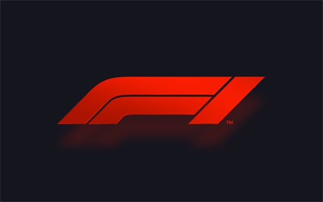

Formula 1

El Campeonato Mundial de Fórmula 1 de la FIA, más conocido como Fórmula 1, F1 o Fórmula Uno, es la principal competición de automovilismo internacional y el campeonato de deportes de
motor más popular y prestigioso del mundo. La entidad que la dirige es la Federación Internacional del Automóvil (FIA). Desde septiembre del 2016, tras la adquisición de Formula One
Group, la empresa estadounidense Liberty Media es la responsable de gestionar y operar el campeonato.
A cada carrera se le denomina Gran Premio y el torneo que las agrupa es el Campeonato Mundial de Fórmula 1. La mayoría de los circuitos de carreras donde se celebran los Grandes Premios
son autódromos, aunque también se utilizan circuitos callejeros y anteriormente se utilizaron circuitos ruteros. A su vez, los automóviles utilizados son monoplazas con la última
tecnología disponible, siempre limitadas por un reglamento técnico; algunas mejoras que fueron desarrolladas en la Fórmula 1 terminaron siendo utilizadas en automóviles comerciales, como
el freno de disco.
El inicio de la Fórmula 1 moderna se remonta al año 1950, en el que participaron escuderías como Ferrari, Alfa Romeo y Maserati. Algunas fueron reemplazadas por otras nuevas como McLaren,
Williams, Red Bull y otras que volvieron como Mercedes que se han alzado varias veces con el Campeonato Mundial de Constructores. Por su parte, los pilotos deben contar con la superlicencia
de la FIA para competir, que se obtiene por los resultados en otros campeonatos.
Creacion del Campeonato
En 1945, inmediatamente después de la Segunda Guerra Mundial, solo hubo cuatro carreras. Antes de la Segunda Guerra Mundial se habían establecido las reglas para las competiciones de Grand Prix,
que debían obedecer tanto autos como pilotos. Estas reglas, conocidas en su conjunto como Fórmula, no se concretaron hasta que en 1947 la antigua AIACR se reorganizó, pasándose a llamar la
Federación Internacional del Automóvil, conocida por las siglas "FIA". Con sede central en París, al final de la temporada de 1949 anunció que para 1950 unirían varios Grandes Premios nacionales
para crear un Campeonato Mundial de Pilotos, por lo que en 1950 se celebró el primer campeonato de Fórmula 1. Por motivos económicos, en los años de 1952 y 1953 todavía se compitió con coches de
Fórmula 2 y el calendario continuó incluyendo varias carreras que no eran consideradas Grandes Premios hasta 1983. Se estableció un sistema de puntuación y se reconocieron un total de siete carreras
como aptas para el Campeonato del Mundo.
Video de uno des los adelantamientos Historicos